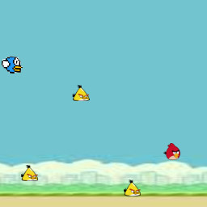

Ваша первая игра на JavaScript. Вы узнаете о том, как
отображать на экране картинки, перемещать их с помощью
скриптов и управлять ими с помощью клавиатуры или мышки.
Результат через: 5-7 занятий.
.
 Работа над вашим вторым проектом познакомит вас с css библиотеками.
При создании шутера с видом сверху вы узнаете о векторах, и научитесь
перемещать и вращать объекты по векторам. Научитесь отрисовывать
всё относительно позиции персонажа
Работа над вашим вторым проектом познакомит вас с css библиотеками.
При создании шутера с видом сверху вы узнаете о векторах, и научитесь
перемещать и вращать объекты по векторам. Научитесь отрисовывать
всё относительно позиции персонажа
Результат через: 15-20 занятий.
.
При разработке хоррор игры вы научитесь создавать спрайтовую анимацию,
и использовать сразу 2 холста, для отображения скрытых объектов только
на одном из них.
Результат через: 20-25 занятий.
.
 Во время создания RPG игры вы узнаете, как сохранять прогресс игрока, и познакомитесь с игровым html интерфейсом
Во время создания RPG игры вы узнаете, как сохранять прогресс игрока, и познакомитесь с игровым html интерфейсом
Результат через: 35-50 занятий.
.
 В процессе разработки аркады, вы научитесь минимизировать ваш код,
что позволит не только оптимизировать игру, но и повысить защиту
вашего кода от плагиата. На этом этапе обучения вы можете выбрать
свой дальнейший вектор развития, перейдя к разработке 3д игр или к
многопользовательским играм.
В процессе разработки аркады, вы научитесь минимизировать ваш код,
что позволит не только оптимизировать игру, но и повысить защиту
вашего кода от плагиата. На этом этапе обучения вы можете выбрать
свой дальнейший вектор развития, перейдя к разработке 3д игр или к
многопользовательским играм.
Результат через: 55-70 занятий.
.
 Создание трехмерного шутера познакомит вас с библиотекой Three.js,
упрощающий работу с webgl сценой. Вы научитесь размещать примитивы,
такие как куб, цилиндр, плоскость и т.д.
импортивровать 3д модели, и управлять перемещением и вращением 3д объектов и камерой персонажа.
Создание трехмерного шутера познакомит вас с библиотекой Three.js,
упрощающий работу с webgl сценой. Вы научитесь размещать примитивы,
такие как куб, цилиндр, плоскость и т.д.
импортивровать 3д модели, и управлять перемещением и вращением 3д объектов и камерой персонажа.
Результат через: 80-100 занятий.
.
 Вы создадите 3д моба игру которая может пойти в ваш портфолио JS junior разработчика.
Во время создания игры вы научитесь импортировать 2д спрайты в трёхмерный мир,
также узнаете, как клонировать объекты, не загружая их повторно.
Вы создадите 3д моба игру которая может пойти в ваш портфолио JS junior разработчика.
Во время создания игры вы научитесь импортировать 2д спрайты в трёхмерный мир,
также узнаете, как клонировать объекты, не загружая их повторно.
Результат через: 110-120 занятий.
.